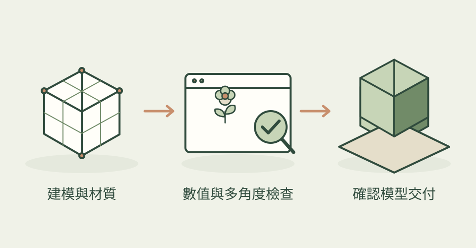

做出好看的渲染只是其中一步。真正要把模型交給遊戲或其他人，還要看尺寸、破洞、法線、貼圖與動畫是否正確。這組技能把製作和檢查排在同一條工作流程裡。
它怎麼幫忙
合集從硬表面建模、雕刻、UV 與 PBR 材質，到貼圖烘焙、骨架動畫、LOD 和遊戲引擎匯出，也涵蓋日夜打光、雨雪和布料模擬。1.2.0 擴充為 28 項技能：新增表面做舊與貼花、卡通渲染、毛髮、地形與模組場景、服裝及影片剪輯。核心按任務挑技能；修改後要求數值與多角度預覽，最後重新讀取輸出檔確認交付。
功能快速理解

把建模、材質與動畫串成流程，經數值和多角度檢查再輸出資產。
功能示意・本站繪製 放大查看可以這樣開口
這是一個可依需求修改的委託範例。
把我的木箱整理成遊戲道具：依參考核對比例，整理 UV，加入適量掉漆、鏽斑和灰塵，再把 Blender 材質烘焙為引擎用貼圖。輸出前檢查遺失貼圖、資料貼圖色彩空間、浮空零件和倒面，附多角度預覽、面數及檔案清單。
適合什麼工作
適合獨立遊戲開發者、技術美術，以及已在使用 Blender、想把資產製作流程整理得更完整的人。也能協助清理外部生成模型，但不保證一鍵修好所有問題。
開始之前
- 準備工具
- 作者明確要求 Blender 5.2 LTS 或更新版本，以及能執行 shell 和查看圖片的 AI agent。Blender MCP 可選；沒有 MCP 可走背景模式。Windows 亦有安裝腳本，但本誌未安裝或測試。
- 使用成本
- 技能採 MIT，沒有必需的付費生圖或 3D 生成 API。仍需支付 AI agent 的使用量，並負擔本機渲染時間與硬體需求；外部素材、生成服務或雲端渲染若另行接入，費用另計。
- 交付內容
- Blender 工程、模型與貼圖、骨架動畫、LOD、遊戲用匯出檔及檢查資料
- 先留意
- 2026-10-23 首次收錄，2026-10-31 依 1.2.0 實質更新。主圖與床單是既有作者展示，不是新增六項技能的實測成果。Blender 卡通節點不會直接隨模型匯出，需在遊戲引擎重建；scene 光照模式只支援 Eevee。毛髮程序化下垂只是起點，主角髮型仍需整理。模型穿插、關節變形與循環動作仍須人工看圖。
最近的觀察
2026-10-31：核對 1.2.0，新增六份真實 SKILL：材質表面製作、風格化 NPR、毛髮整理、環境套件、服裝、影片剪輯。可在道具加掉漆與積塵、做分段卡通陰影和描邊、建立毛髮曲線或遊戲髮片、按坡度散布樹石、製作衣物及安排影片片段。動畫補上骨架動作轉移與循環檢查；資產檢查會找空材質槽、遺失貼圖及誤設 sRGB 的資料貼圖。作者宣稱在 Blender 5.2.3 驗證，本站未執行。
看看其他畫風

作者與來源
本文依作者公開說明整理，沒有實際執行這個專案。功能插圖由本站繪製，原作者範例另行標示；並非本站執行技能的測試結果。GitHub 星數為專案總量，觀察時間為 2026年10月31日 08:30（台北時間）。
與前次快照相比增加 20 星；這不是 GitHub Trending 排名。